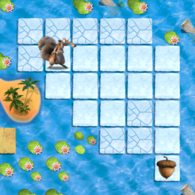
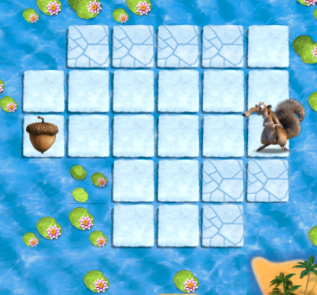

Lesson 10: More Loops (February 7th and 8th)
Link to Lesson:
Code.org Loops With ScratSuggestions/Tips:
This lesson will review and build the concept of "loops" that was introduced int he previous lesson (lesson 9).
The actvity for this lesson is for the students to complete the online puzzles (much like lesson 7).
Here is the link to the puzzles the students will be working on: Loops with Scrat Puzzle 1
As suggested in the lesson plan, go over puzzles 4 and 5 as a class before having the students work on their own (or in pairs). Links to these puzzles can be found in the linked lesson plan, but here they are, should you need them:
Have students attempt to complete all 12 puzzles.
Corresponding QuizIt Questions:
The following questions are the same questions students will see when they log into QuizIt at the end of the lesson. Because each lesson is taught over a two day period, there are two questions on QuizIt that correspond to this lesson.
These questions are shown here as a "teacher-check" to ensure that the material asked in the question has been covered in the lesson. Please do not go over the answer to this question during the lesson. We want to see if the students can apply what they learned in class to answer this question.
1. Using loops, which of the following would get Scrat to the Acorn?

- Repeat 4 times: W , Repeat 4 times: S
- Repeat 3 times: N, Repeat 4 times: E
- Repeat 4 times: E , Repeat 4 times: S
- Repeat 2 times: E, Repeat 3 times: S
2. Using loops, which of the following would get Scrat to the Acorn?

- Repeat 5 times: W
- Repeat 3 times: N
- Repeat 2 times: W
- Repeat 5 times: S